QuPath cell detection in Python
QuPath cell detection in Python#
This notebook attempts to replicate QuPath’s cell detection in Python.
It is quite rough, and by no means an exact copy of the original method - but hopefully gives some useful insights into how it works.
from imageio.v3 import imread
im = imread('CMU-1-detail.tif')
import numpy as np
from matplotlib import pyplot as plt
def show_image(im, title:str=None, clip_pct=0.05, cmap='gray'):
args = {}
if clip_pct and im.dtype != bool:
args['vmin'] = np.percentile(im.ravel(), clip_pct)
args['vmax'] = np.percentile(im.ravel(), 100-clip_pct)
args['cmap'] = cmap
plt.imshow(im, **args)
plt.axis(False)
if title:
plt.title(title)
plt.show()
show_image(im, title='Original image')
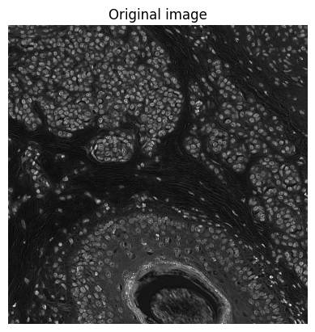
def _scale_length(size: float, pixel_size: float, do_round=True) -> float:
"""
Convert length in calibrated units to a length in pixels
"""
size_pixels = size / pixel_size
return np.round(size_pixels) if do_round else size_pixels
def _scale_area(size: float, pixel_size: float, do_round=True) -> float:
"""
Convert area in calibrated units to an area in pixels
"""
size_pixels = size / (pixel_size * pixel_size)
return np.round(size_pixels) if do_round else size_pixels
from scipy import ndimage
from skimage import morphology, segmentation
from skimage.color import label2rgb
from skimage.measure import regionprops
def cell_detection(im: np.ndarray,
pixel_size = 0.5, # Use to calibrate size-related parameters (usually in µm)
background_radius = 8,
median_radius = 0,
sigma = 1.5,
min_area = 10,
max_area = 400,
threshold = 0.1,
max_background_intensity = 2,
split_by_shape = True,
refine_boundaries = True, # True in QuPath by default (not adjustable)
# cell_expansion = 5.0,
# include_nucleus = True,
# smooth_boundaries = True,
# make_measurements = True,
do_debug = True
) -> np.ndarray:
# Ensure we're working with a 32-bit copy
im = im.astype(np.float32, copy=True)
if do_debug:
show_image(im, title='Input image')
# Estimate background using (modified) opening-by-reconstruction & subtract if needed (optional)
bw_background_mask = None
if background_radius > 0:
# TODO: Use max_background_intensity here
# See https://github.com/qupath/qupath/blob/v0.3.2/qupath-core-processing/src/main/java/qupath/imagej/detect/cells/WatershedCellDetection.java#L598
strel = morphology.disk(_scale_length(background_radius, pixel_size))
im_bg = morphology.erosion(im, strel)
# Exclude regions with very high background values
if max_background_intensity > 0:
bw_background_mask = im_bg > max_background_intensity
strel_bg = morphology.disk(_scale_length(background_radius*2, pixel_size))
bw_background_mask = morphology.dilation(bw_background_mask, strel_bg)
im_bg[bw_background_mask] = -np.inf
im_bg = morphology.reconstruction(im_bg, im)
im = im - im_bg
if do_debug:
show_image(im_bg, title='Background estimate')
show_image(im, title='Background subtracted')
# Apply median filter to reduce text (optional)
if median_radius:
strel = morphology.disk(_scale_length(median_radius, pixel_size))
im = ndimage.median_filter(im, footprint=strel)
if do_debug:
show_image(im_log, title='Median-filtered image')
# Approximate (inverted) Laplacian of Gaussian filter
sigma_pixels = _scale_length(sigma, pixel_size, do_round=False)
im_log = ndimage.gaussian_filter(im, sigma_pixels)
im_log = ndimage.convolve(im_log, np.asarray([[0, -1, 0], [-1, 4, -1], [0, -1, 0]]))
if do_debug:
show_image(im_log, title='LoG-filtered image')
# Threshold at zero (potential edges are at zero-crossings)
bw_log = im_log > 0
if do_debug:
show_image(bw_log, title='Thresholded loG-filtered image')
# Find local maxima (there is a small threshold value used as tolerance)
bw_maxima = (im_log > 0.001) & (im_log == ndimage.maximum_filter(im_log, size=3))
if do_debug:
show_image(ndimage.maximum_filter(bw_maxima, size=3), title='Local maxima')
# Find the height of the maxima
im_log2 = im_log.copy()
im_log2[bw_maxima] = -np.inf
im_max_height = im_log - morphology.reconstruction(im_log2, im_log)
if do_debug:
show_image(im_max_height, title='Local maxima heights')
# Apply watershed transform using the maxima, masked to positive values in im_log
# This should give potential nucleus fragments as labeled regions
lab, n_labels = ndimage.label(im_max_height > 0) # 4-connectivity
lab = segmentation.watershed(-im_log, markers=lab, mask=im_log>0)
# # Checking that label filling worked
# lab = lab - ndimage.minimum_filter(lab, size=5)
# show_image(label2rgb(lab))
# _fill_labels(lab)
# show_image(label2rgb(lab))
# # Fill holes in labels (surrounded by the same label)
# _fill_labels(lab)
# Fill holes in labels & retain fragments with a high enough mean intensity,
# which don't occur in a region with a very high background
bw_fragments = np.zeros(lab.shape, dtype=bool)
regions = regionprops(lab)
for props in regions:
# Check mean of filled region
if im[props.slice][props.image_filled].mean() > threshold:
# Skip if in a region with high background
if bw_background_mask is not None and bw_background_mask[props.slice][props.image_filled].any():
continue
# Retain filled-in fragments with sufficient mean intensity
bw_fragments[props.slice][props.image_filled] = True
# Refine detected fragments, reapplying the LoG-filtered image mask
bw_fragments = ndimage.maximum_filter(bw_fragments, size=3)
bw_fragments[im_log < 0] = False
if do_debug:
show_image(bw_fragments, title='Detected fragments')
# Split using watershed applied to distance transform (optional)
if split_by_shape:
bw_fragments = ndimage.binary_fill_holes(bw_fragments)
bw_dist = ndimage.distance_transform_edt(bw_fragments)
# Try to match QuPath/ImageJ implementation of EDM().toWatershed(bp)
# (it is likely to be a bit different)
bw_dist_maxima = morphology.h_maxima(bw_dist, 0.6)
lab = ndimage.label(bw_dist_maxima, structure=np.ones(shape=(3, 3)))[0]
lab = segmentation.watershed(-bw_dist, lab, mask=bw_fragments, watershed_line=True)
if do_debug:
show_image(label2rgb(lab), title='After split by shape')
# Minor boundary refinement, to try to counter the effects of the Gaussian filter expanding things
# This seems to help in QuPath... but might not here
if refine_boundaries and sigma_pixels > 1.5:
bw = lab > 0
im_boundary_cleanup = ndimage.gaussian_filter(im, 1.0)
im_boundary_cleanup = ndimage.convolve(im_boundary_cleanup, np.asarray([[0, -1, 0], [-1, 4, -1], [0, -1, 0]]))
bw_boundary_cleanup = im_boundary_cleanup > 0
bw_boundary_cleanup[~bw] = False
bw = ndimage.minimum_filter(bw, size=3)
bw[bw_boundary_cleanup] = True
lab = ndimage.label(bw)[0]
if do_debug:
show_image(label2rgb(lab), title='After boundary cleanup')
# Regenerate regions, filling them in & removing ones that are too small, large or dim
regions = regionprops(lab)
min_area_pixels = _scale_area(min_area, pixel_size, do_round=False)
max_area_pixels = _scale_area(max_area, pixel_size, do_round=False)
bw = np.zeros(lab.shape, dtype=bool)
for props in regions:
area = props.area_filled
# Check area
if props.area_filled >= min_area_pixels and props.area_filled <= max_area_pixels:
# Check intensity again (since hole-filling might have changed the situation)
if im[props.slice][props.image_filled].mean() > threshold:
bw[props.slice][props.image_filled] = True
lab = ndimage.label(bw)[0]
if do_debug:
show_image(label2rgb(lab), title='Final result')
return lab
im2 = im[:384, :384]
lab = cell_detection(im2, do_debug=True)
show_image(segmentation.mark_boundaries(
np.clip((im2-im2.min())/(np.percentile(im2, 99) - im2.min()), 0, 1),
lab, color=(1, 0, 0), mode='thick'))
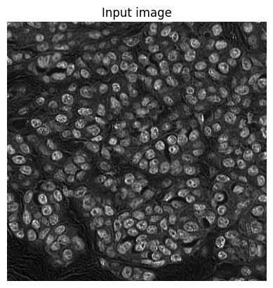
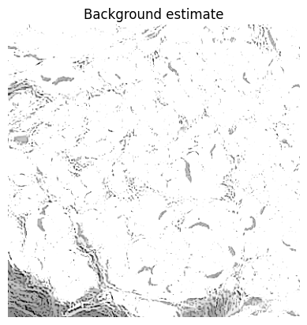
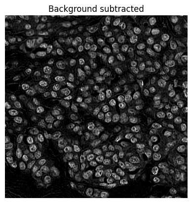
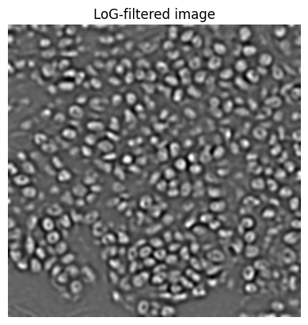
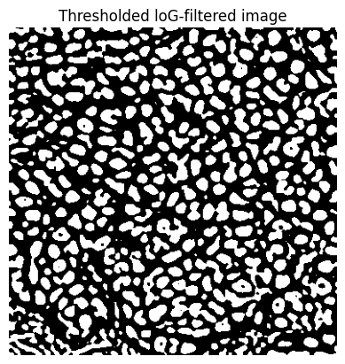
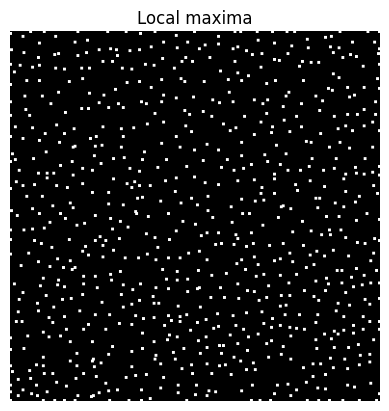
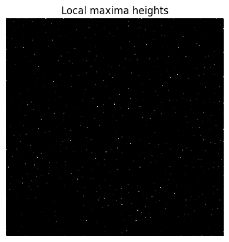
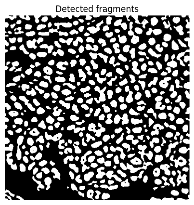
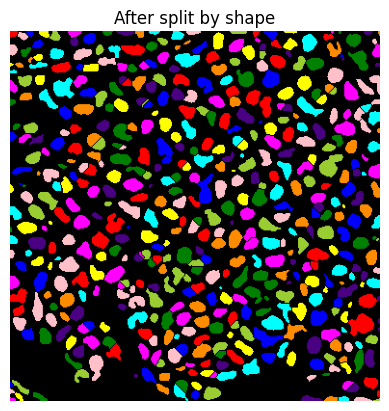
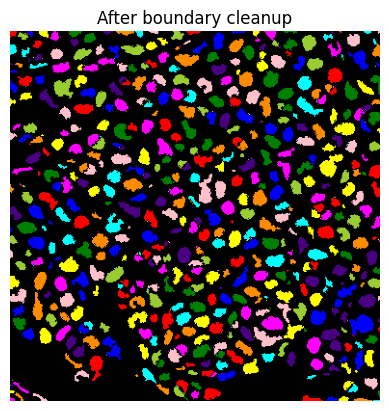
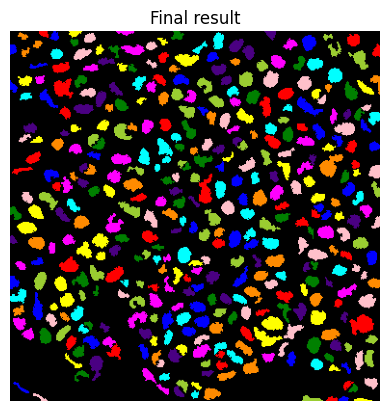
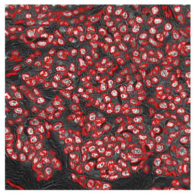